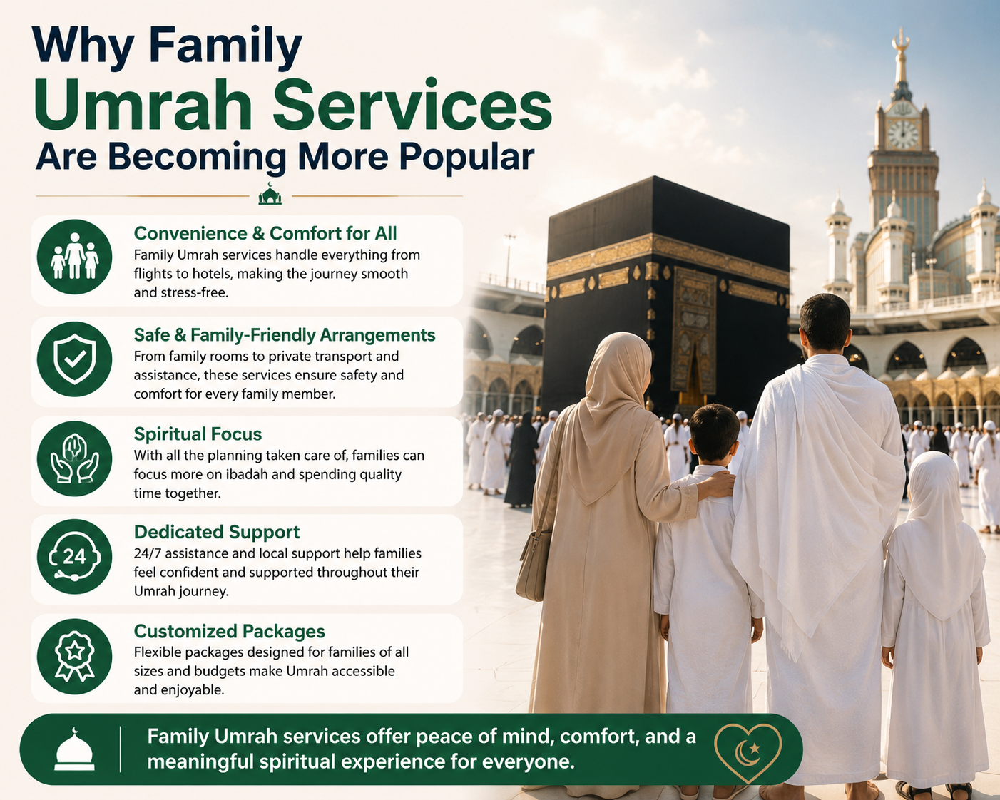

Performing Umrah is a deeply spiritual journey and modern families are increasingly choosing Family Umrah Package to make the experience smooth and memorable. An organized family umrah package includes flights, hotels and transport and the families can only concentrate on worship and leave planning and logistics to the professionals.
These services are also designed to satisfy the various needs of families and include comfortable rooms, guided tours and customized itineraries. Through professional support families will be able to have a meaningful pilgrimage and have memorable moments as a family.
Packages are easy to travel as they combine flights, hotels, transportation and guided tours. Families are no longer concerned with making various bookings or scheduling. Experts note that organized packages let pilgrims focus on spiritual reflection without logistical stress. This convenience is vital to many families as it guarantees them a hassle free journey and that all the members of the family enjoy the pilgrimage in full without the need to be distracted or tired.
These packages have hotels near Haram and have rooms that accommodate all generations. Careful facilities are enjoyed by children and the aged members of the family. Families do not commute everyday and can sleep without any worries after prayers or rituals. The pilgrimage is not as exhausting due to comfortable rooms which enable all the participants to participate in spiritual activities. Such ease of use has helped to popularize family oriented Umrah travel.
Many Family Umrah Services have a guide to interpret rituals, history and holy places. Children and adults will get educational insights which improve the spiritual journey. Guided tours enable the families to know the meaning of every place and practice. Pilgrims like this organized way of worship and learning which makes the journey memorable, fulfilling and spiritually enriching.
The main concern of families that travel with children and elders is the safety. Professional services offer an organized transportation, crowd control and medical services. The families are comfortable with the fact that qualified staffs are in charge of the pilgrimage. This encouragement enables all to get down to worship and reflection. The safety is one of the reasons that many families give when they decide to use guided Umrah travel instead of doing it on their own.
Bundling packages save time and money as opposed to individual bookings of flights, hotels and transportation. The families are able to spend more time in prayer and contemplation as opposed to planning the logistics. According to experts this is one of the reasons of the increased popularity of family services. The pilgrimage is affordable and convenient and can be enjoyed by the entire family without any stress and hassle.
There are usually packages that include strollers, wheelchairs and meals that are suitable to age children and elderly members. Families value services which are comfortable to all. Considerate plans help to make rituals available and alleviate exhaustion. The pilgrimage is spiritual and physically manageable because of the ability of all members to be fully involved. These services have become more and more dependable by families to host all generations.
The new packages have flexible timetables to strike a balance between prayer, rest and sightseeing. Families will be able to change their plans as per the needs without foregoing rituals. Personalized itineraries enable pilgrims to control the amount of energy and make sure that they are comfortable. According to experts this flexibility has been able to attract more families since it guarantees that both spiritual and practical needs are addressed during the pilgrimage.
Coming in groups enables the families to interact with others and have the experience together. Spiritual engagement is improved through interaction, guided rituals and reflection in groups. This social supportive environment makes pilgrims feel stronger in their faith and the pilgrimage more meaningful. These experiences are part of the increasing popularity of Family Umrah Services among the contemporary traveller who want to experience spiritual and emotional satisfaction.
The increasing popularity of Family Umrah Services demonstrates the importance of comfort, safety and convenience that the families appreciate when they are making the pilgrimage. All the logistics including flights, accommodations etc. are managed by these services and travelers can be devoted to worship and spiritual contemplation. Guided tours and flexible itineraries are also beneficial to families as everyone can enjoy their tours, not only children but also the elderly. The structured process will make the process easier, meaningful and fulfilling to each member of the family.
Professional services when it comes to a family pilgrimage are a sure way to have a memorable and enriching experience. Through personalized attention, team building and careful organization families will have a smooth Umrah experience. Not only does this improve the spiritual interaction but it leaves a memorable experience and bonds the family. The trend in modern pilgrims is to acknowledge that organized services are making Umrah an organized, comfortable and emotionally satisfying experience to all generations.